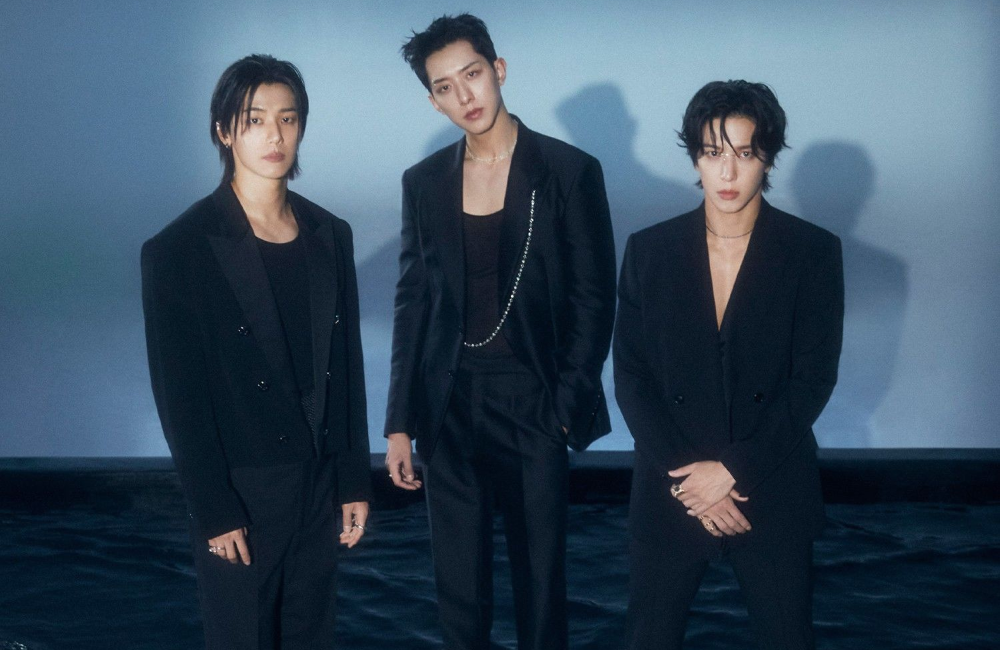
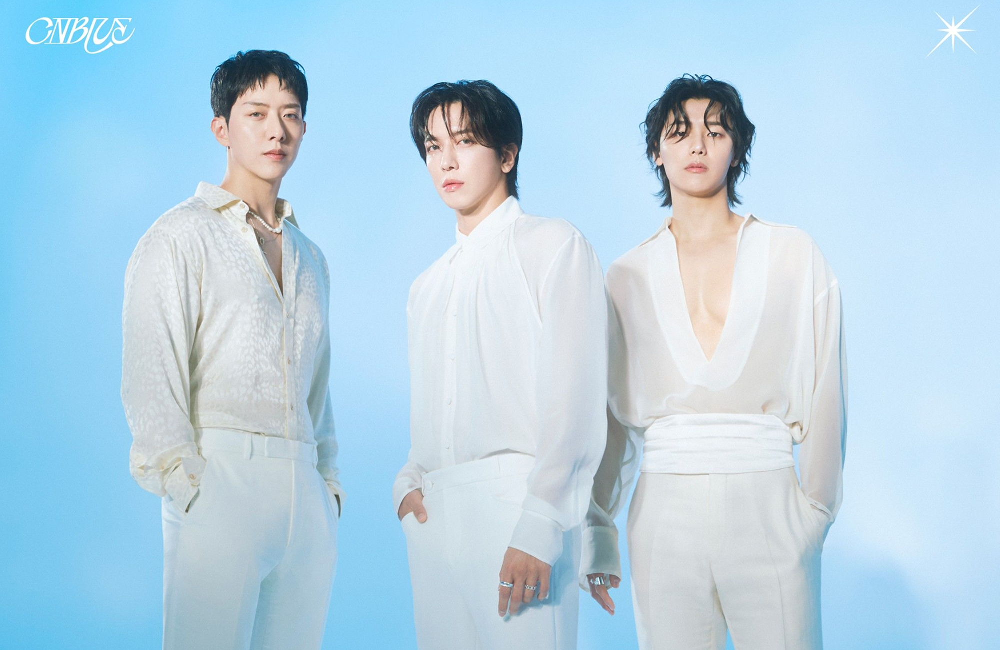
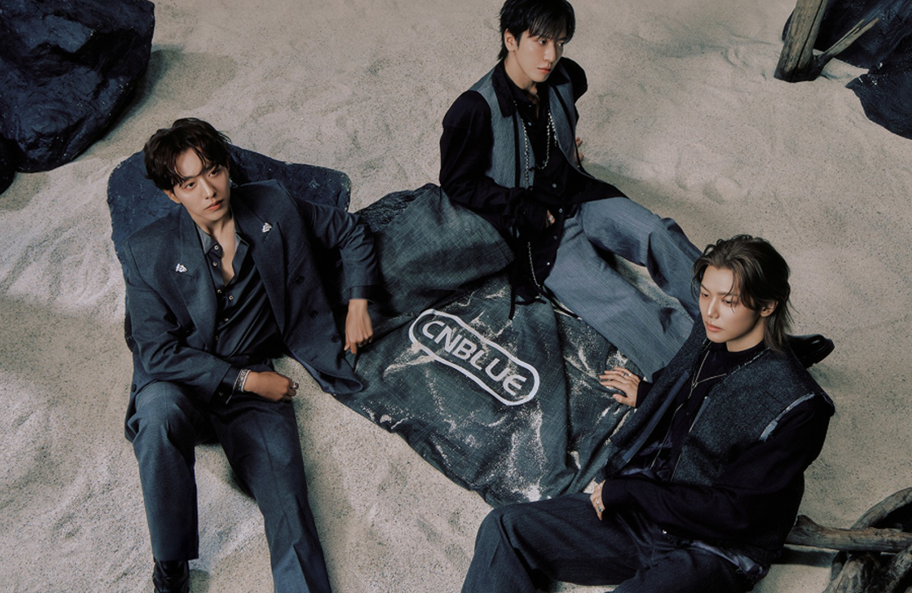
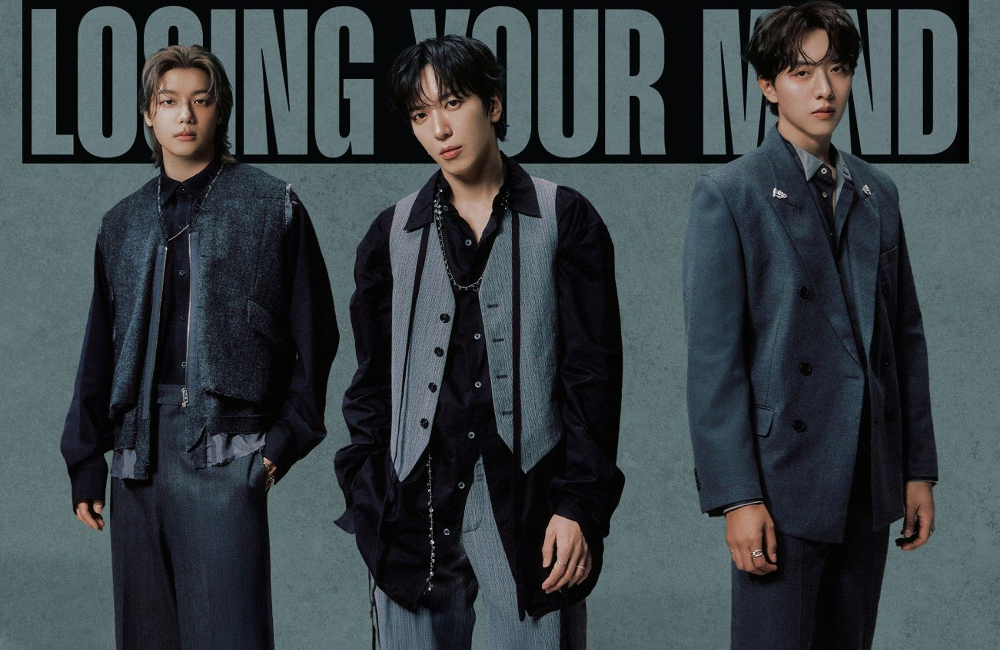
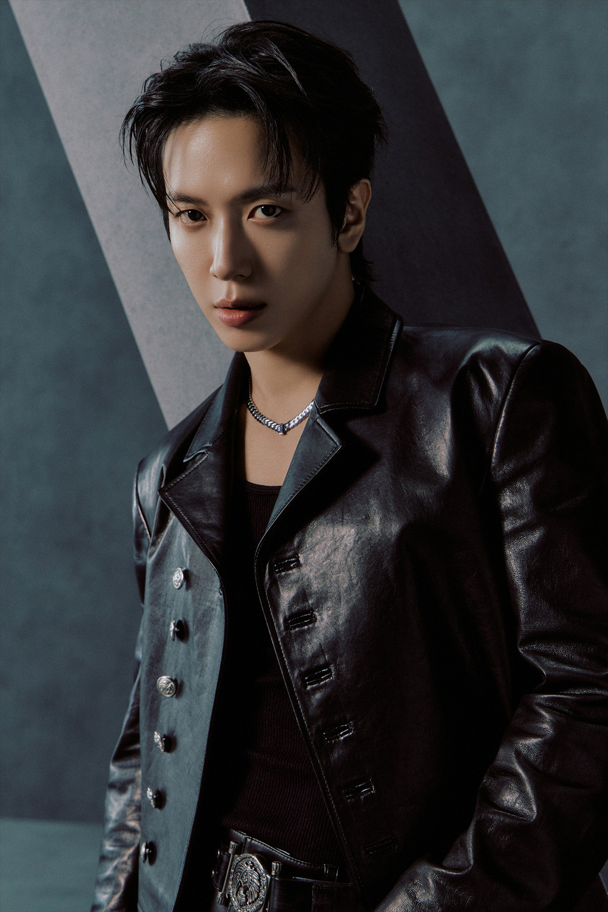
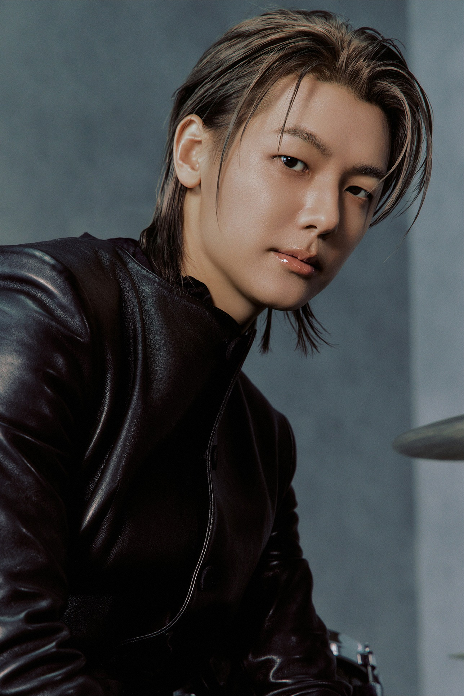

PROFILE
ALBUM
VIDEO
GALLERY
SCHEDULE




PROFILE
CNBLUE
세련된 모던락의 대표 주자, 씨엔블루

정용화
1989.06.22
Leader, Guitar, Main Vocal, Rap

강민혁
1990.06.28
Drum, Chorus
이정신
1990.09.15
Bass, Rap
AWARDS
2010-11-14
제2회 멜론 뮤직 어워드 신인상, TOP10
2010-11-28
제12회 엠넷 아시안 뮤직 어워드 남자 신인상
2010-12-09
제25회 골든디스크 디지털 음원 부문 본상
2011-01-21
제20회 하이원 서울가요대상 신인상
2011-11-21
제2회 대한민국 대중문화예술상 문화체육관광부장관 표창
2011-11-29
제13회 엠넷 아시안 뮤직 어워드 베스트 밴드 퍼포먼스상
2011-12-04
제1회 한국 음악 저작권 대상 락 부문 본상
2012-01-11
제26회 골든 디스크 음반 부문 본상, 디지털 음원 부문 본상, 아시아 최고 그룹상, 말레이시아 최고 인기상
2013-02-13
제2회 가온차트 K-POP어워드 한류특별상
2014-01-16
제28회 골든디스크 음원 부문 본상, 굿윌스타상
2014-04-15
제2회 중국 인위에 V차트 어워드 최우수밴드상
2014-07-16
가온웨이보차트어워즈 그룹상
2014-11-13
제6회 멜론 뮤직 어워드 록부문
2014-12-03
2014 엠넷 아시안 뮤직 어워드(MAMA) 베스트 밴드 퍼포먼스상
2014-12-06
중국 2015 환호-아이치이의 밤 아시아 베스트 그룹상
2014-12-21
2014 SBS 가요대전 베스트 밴드상
2015-01-14
제29회 골든디스크 4관왕 - 음반부문 본상, 아이치이 인기상, 쎄씨 아시아 아이콘상, 차이나 굿윌스타상
2015-04-13
제15회 중국 음악풍운방 해외가수상(정용화), 해외인기그룹상(씨엔블루)
2015-12-02
2015 엠넷 아시안 뮤직 어워드(MAMA) 베스트 밴드 퍼포먼스상
2016-01-21
제30회 골든디스크 음반부문 본상(씨엔블루), 베스트 보컬 솔로상(정용화)
2016-12-02
2016 엠넷 아시안 뮤직 어워드(MAMA) 베스트 밴드 퍼포먼스상
CONCERT
2010-07-31
아시아 쇼케이스 Listen to the CNBLUE / 6개국 9회 도시 9회 공연
2011-01-09
1번째 일본 제프투어 RE-MAINTENANCE / 4개 도시 4회 공연
2011-09-17
1번째 아시아투어 BLUE STORM / 4개 도시 8회 공연, 2012년 대만공연 당해 해외 아티스트 최단 시간 매진 기록
2011-12-04
1번째 일본 윈터투어 Here, In My Head / 5개 도시 5회 공연
2012-08-12
일본 A-Nation - ROCK NATION
2012-10-02
1번째 일본 아레나투어 COME ON / 6개 도시 9회 공연 10만 관객 동원
2013-04-06
1번째 월드투어 BLUE MOON / 14개국 18개 도시 20회 공연 12만 관객 동원
2013-08-10
일본 섬머 소닉 2013
2013-11-01
2번째 일본 아레나투어 ONE MORE TIME / 5개 도시 8회 공연 10만 관객 동원
2014-03-15
1번째 패밀리콘서트 FNC KINGDOM IN JAPAN / 양일간 2만 6천 관객 동원
2014-04-19
2번째 아시아투어 2014 CNBLUE LIVE - Can’t Stop
2014-04-29
1번째 일본 스프링 라이브 Truth
2014-08-15
일본 A-Nation - ROCK NATION / 2012년에 이어 두 번째 출연
2014-08-17
일본 섬머 소닉 2014 / 2013년에 이어 두 번째 출연
2014-10-29
3번째 일본 아레나투어 WAVE / 5개 도시 8회 공연
2014-12-20
2번째 패밀리콘서트 FNC KINGDOM IN JAPAN
2015-04-22
2번째 일본 스프링 라이브 WHITE
2015-05-02
3번째 패밀리콘서트 2015 FNC KINGDOM IN SEOUL
2015-05-16
4번째 패밀리콘서트 FNC KINGDOM IN HONGKONG
2015-10-02
3번째 아시아투어 CNBLUE LIVE COME TOGETHER
2015-11-03
4번째 일본 아레나투어 Be a Supernova / 5개 도시 9회 공연
2016-05-22
5번째 일본 아레나투어 We
2016-11-02
6번째 일본 아레나 투어 Our Glory Days / 5개 도시 9회 공연
2017-05-17
7번째 일본 아레나 투어 Shake! Shake! /3개 도시 6회 공연
2017-06-03
4번째 아시아투어 BETWEEN US / 7개 도시 9회 공연
2017-11-03
8번째 일본 아레나투어 Starting Over / 6개 도시 9회 공연
2023-10-07
국내 단독콘서트 CNBLUENTITY
2024-03-16
5번째 아시아투어 2024 CNBLUE LIVE ‘CNBLUENTITY’ / 9개 도시 12회 공연
2024-09-21
국내 단독콘서트 VOYAGE into X
2024-10-26
6번째 아시아투어 2024 CNBLUE LIVE – VOYAGE into X IN ASIA / 9개 도시 13회 공연
2025-04-16
1번째 북미투어 2025 CNBLUE LIVE – VOYAGE into X IN NORTH AMERICA / 4개 도시 4회 공연
2026-01-17